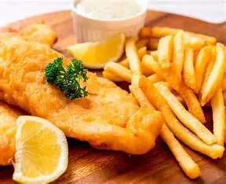
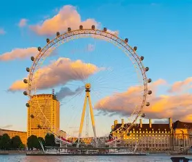
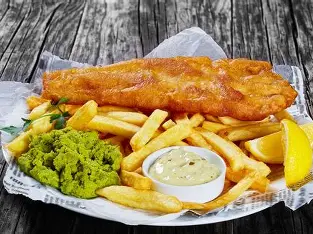
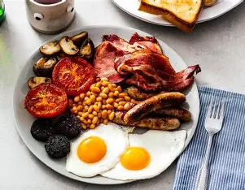
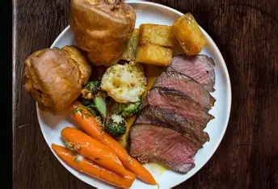
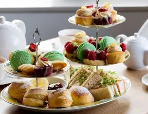
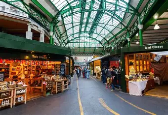

Londres te espera

Historia viva
Desde el Big Ben hasta la Torre de Londres, cada rincón cuenta una historia fascinante que te transportará a través de los siglos.

Sabores únicos
Descubre la diversidad culinaria de Londres, desde el tradicional fish and chips hasta los mercados gastronómicos más innovadores.
Espacios verdes
Relájate en los impresionantes parques reales como Hyde Park o Regent's Park, verdaderos pulmones verdes en el corazón de la ciudad.
Qué visitar en Londres

Big Ben y Parlamento
El icónico reloj y el Palacio de Westminster son parada obligatoria. No olvides tu cámara para capturar este símbolo de Londres.

London Eye
Sube a esta noria gigante para disfrutar de las mejores vistas panorámicas de la ciudad. Especialmente bonito al atardecer.
Torre de Londres
Descubre la historia de este castillo medieval y admira las joyas de la corona británica.
Museo Británico
Uno de los museos más importantes del mundo con entrada gratuita. ¡No te pierdas la Piedra Rosetta!
Gastronomía londinense

Fish and Chips
El plato más emblemático de la cocina británica. Bacalao rebozado con patatas fritas, tradicionalmente servido con guisantes.

Full English Breakfast
El desayuno inglés completo: huevos, bacon, salchichas, judías, champiñones y pudding negro.

Sunday Roast
El tradicional asado de los domingos con carne, patatas, verduras y Yorkshire pudding.

Afternoon Tea
La experiencia más británica: té, scones con clotted cream, sándwiches y pastelitos.
Pie and Mash
Pastel de carne con puré de patatas y salsa de perejil, un clásico del este de Londres.

Mercado de Borough
El mercado gastronómico más famoso de Londres. Encontrarás de todo, desde queso artesano hasta comida internacional.
¿Te ayudamos a planificar tu viaje?
Si tienes alguna pregunta sobre tu próximo viaje a Londres, no dudes en contactarnos. Estaremos encantados de ayudarte a planificar la experiencia perfecta.
Email: manuelbonetfernandez@gmail.com
Teléfono: +34 644 79 76 40
Síguenos en redes: @manuelbonetfernandez